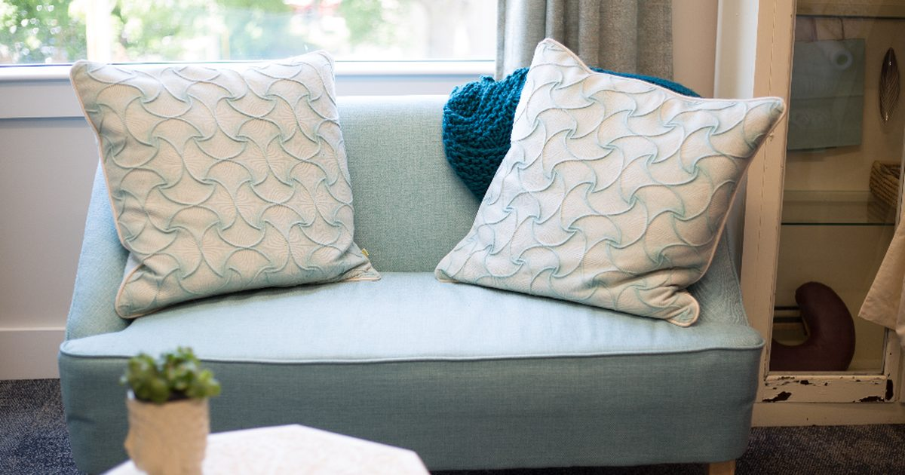

Small-Space Training
Training in a Studio Flat: A Real Layout Walkthrough
In a studio, the training space and the living space are the same square metres. The arrangement that works is the one that does not require negotiating between them.

A studio compresses every constraint at once: small floor area, furniture that cannot move far, one room serving four functions, and usually a neighbour on the other side of every surface.
It is also entirely workable, provided the arrangement is decided once rather than negotiated every evening.
The studio problem
In a one-bedroom you can dedicate a corner. In a studio, any space you dedicate to training is space subtracted from living, and the subtraction is visible all day.
The consequence is that most people in studios train in the middle of the room after moving a coffee table, which works for about three weeks. Then the table moving becomes the thing that does not happen, and the routine goes with it — the friction mechanism described in setting up a home gym corner.
Auditing the room
Do this once, with a tape measure, and write the numbers down.
Find your longest clear run. Not the biggest open area — the longest straight line of floor with nothing on it. In most studios this is beside the bed, between the sofa and a wall, or diagonally across the room. You need about 1.9 metres, which is roughly your height lying down.
Check the width. 0.7 metres is enough for almost everything. A metre covers dead bugs and anything where the arms travel.
Check the height. Standing with arms overhead needs your height plus about 60 centimetres. Studios in converted buildings often fail this — see low-ceiling workouts.
Identify one usable door frame. For a bar or a band anchor. Studios often have only the entrance and the bathroom door, and the bathroom door is usually the better bet because it is used less.
The full per-exercise measurements are in how much floor space you need.
The layout that works
The principle: the clear run stays clear permanently, and everything else arranges around it.
In practice that usually means pushing furniture to the perimeter and accepting one strip of floor that never holds anything. It looks slightly odd for a week and then looks normal.
Three specific placements that help:
Bed against a wall, not floating. A bed with one long side against a wall frees a metre of floor that a centred bed consumes.
Sofa against the same wall as the kitchen run, if possible, which tends to open up a diagonal rather than leaving two half-widths.
Nothing on the clear strip, including temporarily. This is the rule that matters. A laundry basket left there for one evening is how the strip stops being clear.
Choosing furniture that helps
In a studio, furniture is training equipment whether you intended it or not.
- A sturdy dining chair earns its place several times over: dips, step-ups, split squats, incline push-ups. Worth choosing solid wood over anything lightweight for this reason alone.
- A solid table gives you inverted rows, which is the hardest pattern to cover — see rows at home.
- An ottoman or storage footstool stores your mat and bands and doubles as a step-up platform.
- A bed on legs rather than a divan gives you under-bed storage for tiles and a mat.
What to avoid: castors on anything you might lean on, and glass-topped tables, which are not usable for rows.
What the session looks like
Everything happens on the clear strip. About twenty-five minutes.
- Bulgarian split squat, rear foot on the chair — 3 × 8–12 each leg
- Push-up — 3 × 10–15
- Inverted row under the table, or band row in the bathroom door frame — 3 × 10–15
- Single-leg glute bridge — 3 × 12 each side
- Pike push-up — 3 × 8–12
- Dead bug — 3 × 10 each side
All five movement patterns, nothing travelling, nothing requiring more than about two metres by one. It is essentially the three-day split with the exercise selection constrained to the strip.
The strip stays clear. That single rule does more for training in a studio than any amount of equipment.
Noise in a studio
Studios are usually in buildings with several flats, which means neighbours on at least one adjoining surface and often below.
The mitigations are the standard ones and they matter more here: no impact at all, train near a supporting wall rather than mid-floor, and cover both hands and feet with a dense mat — see exercise mats for noise reduction and quiet home workouts.
One studio-specific point: because the room serves as a bedroom, training late is common, and late training is when noise complaints happen. A session that would be unremarkable at six in the evening is a different matter at eleven.
The part nobody mentions
Training where you sleep, eat and work has a psychological cost that is rarely acknowledged and is real. There is no change of context, no separation between the space where you rest and the space where you exert yourself.
Two things that help, both small. Put the mat down as a deliberate act at the start and roll it away at the end — a physical marker that the room has changed function for twenty minutes. And if the flat has a balcony or a nearby park, using it occasionally provides the change of setting that a studio otherwise cannot — see balcony and garden workouts.
None of this changes the physiology. Adult activity guidance asks for muscle-strengthening work on two or more days a week,1 and a studio can supply that comfortably. It changes whether you keep doing it, which is the variable that actually determines the outcome.
Where to go next
For the wider set of small-space constraints, see the guide to working out in a small apartment. For storage in a studio, see how to store home gym equipment in a tiny flat.
Frequently asked questions
How do you work out in a studio flat?
Identify one clear run of floor about 1.9 metres by 0.7, keep it permanently clear, and arrange all furniture around it. The rule that matters is that nothing is placed on the strip even temporarily.
How much space do I need to train in a studio?
About 1.9 metres by 0.7 covers nearly every exercise, since almost everything is bounded by your height lying down. A metre of width additionally covers dead bugs and anything where the arms travel.
What furniture is most useful for training in a studio?
A sturdy solid-wood dining chair, which covers dips, step-ups, split squats and incline push-ups. A solid table for inverted rows is the next most valuable, since pulling is the hardest pattern to cover.
How do I train quietly in a studio flat?
No impact at all, train near a supporting wall rather than mid-floor, and cover both hands and feet with a dense mat. Late-evening training is common in studios and is when complaints happen, so consider the hour as much as the exercises.
Is it bad to train in the same room you sleep in?
It has a real psychological cost, since there is no separation between the space where you rest and the space where you exert yourself. Rolling the mat out deliberately at the start and away at the end provides a small but useful marker that the room has changed function.
Sources and further reading
- World Health Organization. WHO Guidelines on Physical Activity and Sedentary Behaviour. 2020.
- NHS. Strength and Flex exercise plan.
- NHS. Physical activity guidelines for adults aged 19 to 64.
- MedlinePlus, U.S. National Library of Medicine. Exercise and Physical Fitness.
Comments
Comments are not enabled yet. Add a hosted comment embed (Disqus, Commento, Giscus) inside this container when you are ready.